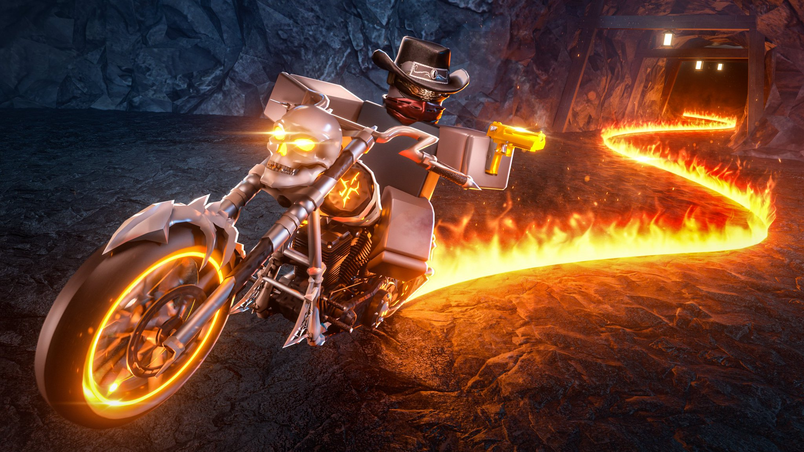

🤠 Wanted: a pornit Halloween-ul cu zombi, mașini noi și o hartă de toamnă cu „un mare secret”

🤠 Evenimentul de Halloween din Wanted a început! Jocul apare acum pe Roblox ca „Wanted [🎃UPDATE]”, iar descrierea oficială spune ce aduce.
🎃 Ce e nou, după descrierea oficială a jocului:
- 🧟 Lupți cu valuri de zombi în badlands și primești oase (bones)
- 🏎️ Două vehicule noi: Reaper și Rattler
- 💰 Un quest nou, Ghost Bag
- 🗺️ O hartă nouă de toamnă, cu „a big secret”, adică un mare secret
❓ Ce e secretul nu se spune nicăieri. Dezvoltatorii zic doar că lista completă cu schimbări e în patch notes, în joc.
💡 Pentru cine n-a jucat: în Wanted ești jefuitor de bănci sau lupți cu infractorii ca să aduci dreptatea în Oasis City. Crimele îți cresc nivelul de wanted și îți pun o recompensă pe cap.
👥 Sâmbătă, ~11:40 RO, Wanted avea ~12,6K jucători online.
🖼️ Thumbnail-ul update-ului a fost arătat pe X de Softy (@SoftGB): https://x.com/SoftGB/status/2112181986580144392
🎮 Jocul pe Roblox: https://www.roblox.com/games/14438406081
Tu ai găsit deja secretul? Scrie în comentarii!
Follow pe TikTok @vexu_online și abonare pe YouTube la VEXU Online. Follow = Au ce bile! 💥